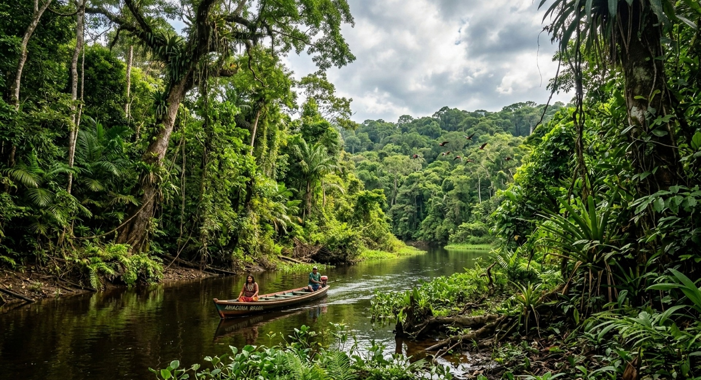
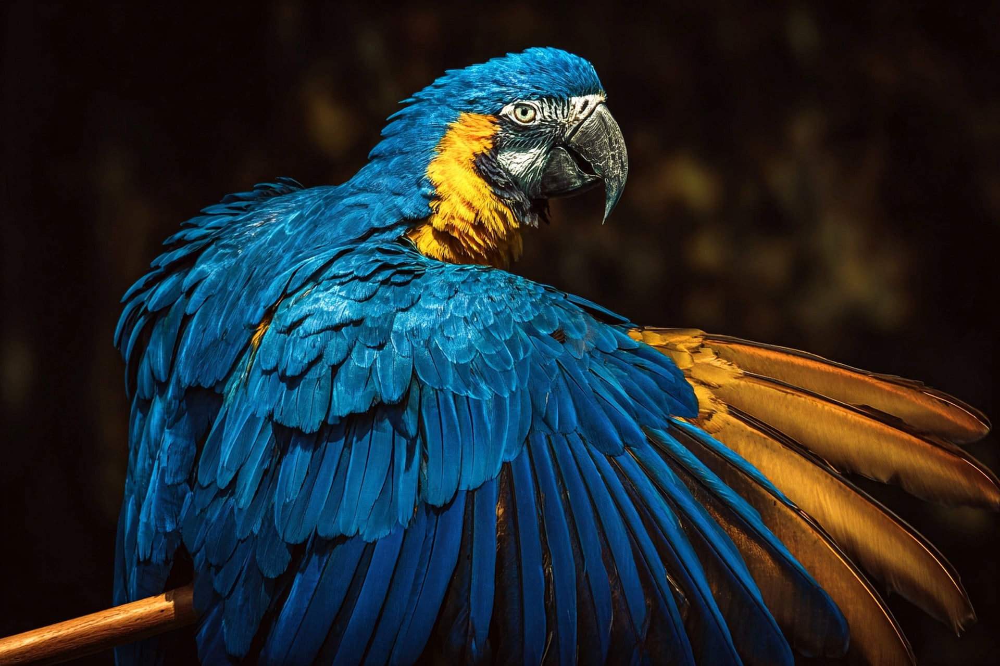
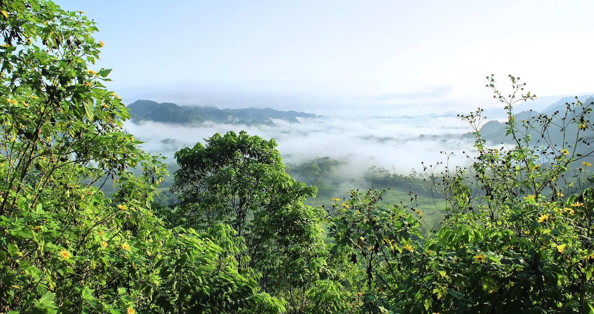
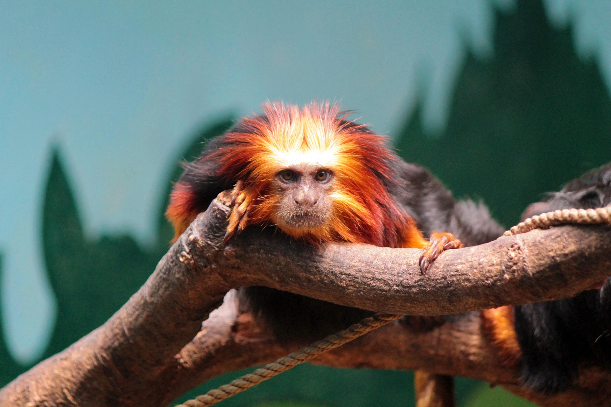
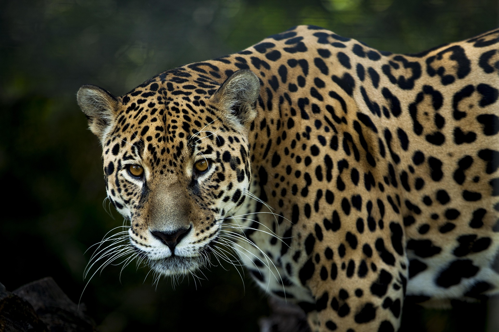
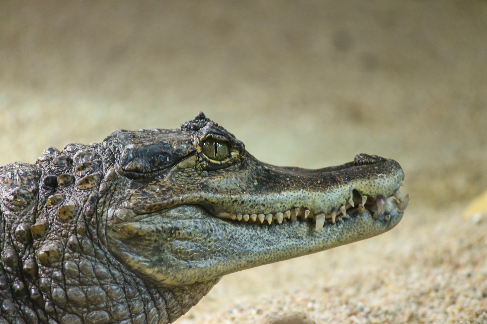
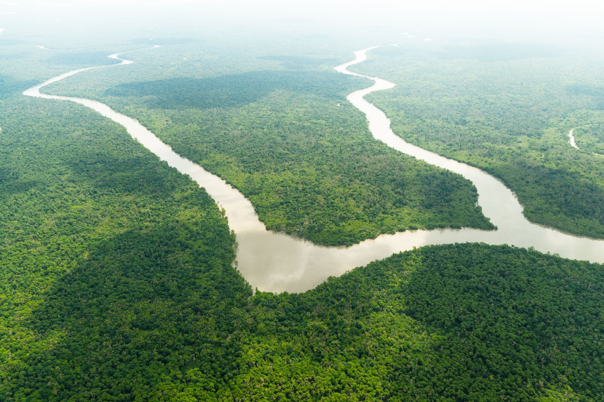
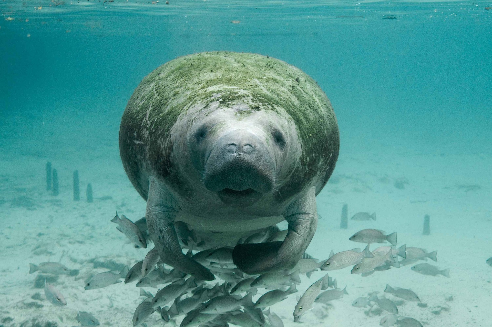

Sobre a Amazônia
A Amazônia é uma das maiores florestas tropicais do mundo e possui uma enorme diversidade de plantas, animais e rios.
Grande parte da Floresta Amazônica está localizada no Brasil, mas ela também está presente em outros países da América do Sul. A região possui grande importância para o meio ambiente e abriga milhares de espécies diferentes.
A floresta também é muito importante para as populações que vivem na região, incluindo comunidades tradicionais e povos indígenas, que possuem uma forte relação com a natureza.
Preservar a Amazônia é importante para proteger os animais, as plantas, os rios e toda a biodiversidade existente na região.
Galeria de Fotos







Curiosidades sobre a Amazônia
Maior floresta tropical
A Amazônia é considerada a maior floresta tropical do planeta e ocupa uma enorme área da América do Sul.
Rio Amazonas
O Rio Amazonas é um dos maiores rios do mundo e passa por grande parte da região amazônica.
Biodiversidade
A floresta possui uma grande variedade de animais, plantas, peixes, aves e insetos.
Povos indígenas
Diversos povos indígenas vivem na Amazônia e possuem culturas e tradições que estão ligadas à floresta.